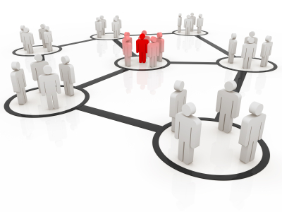

Social Boost < Return to Services
Social Boost is a unique and proprietary technology that promises to take your campaign GeoViral! With Social Boost, your loyal campaign supporters sign-up to become an ‘Ambassador’ of the campaign’s news feed. By becoming an Ambassador of your campaign, your supporter is essentially giving the campaign permission to automatically update their status on their social network accounts – including Facebook, Twitter, LinkedIn, and MySpace – with campaign news.
During the Ambassador sign-up process, the supporter inputs their login credentials for their social network accounts (FB, Twitter, LinkedIn, and MySpace). By selecting ‘auto-post’, the supporter is allowing Social Boost to automatically post your campaign’s blog postings to their social network accounts, which will update their statuses with your campaign messages.
Social Boost dramatically increases your campaigns visibility with each supporter that signs on as an Ambassador!
Contact Us
 Give your campaign a winning boost with our professional suite of products and services.
Give your campaign a winning boost with our professional suite of products and services.
Contact Us